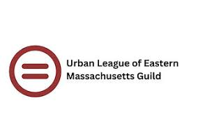
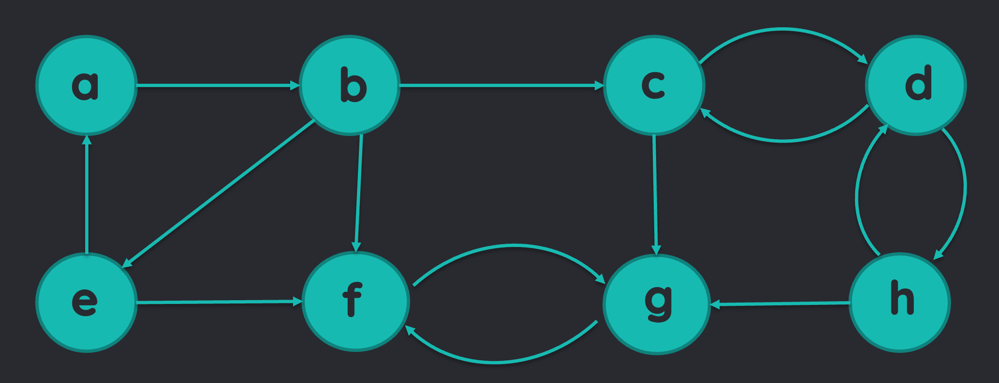

My Projects
Sentiment Analysis of Donald Trump's Tweets
This partner project aims to analyze the sentiment of tweets authored by Donald Trump, focusing on how his messaging shifted throughout his presidency and how the sentiment behind his tweets changed engagement from Twitter users. By comparing the performance of RoBERTa, a transformer-based Natural Language Processing model, with an LSTM neural network, we investigate which approach better captures sentiment shifts and emotional tones in his messaging.
- RoBERTa
- HuggingFace
- Python

Arctic Treeline Stem Amplitude Modeling Dashboard
As part of a group project using 3GB+ NASA EarthData on Arctic treelines, we built a machine learning pipeline to model and interpret tree “stem amplitude” patterns from environmental and species predictors. My primary contribution was implementing and evaluating the models (e.g., KMeans), comparing performance to baselines, and helping translate results into clear, user-facing insights.
- Python
- Shiny
- Posit Cloud
- R
Voter Turnout Analytics Dashboard
In Votes & Voices, our capstone team partnered with the City of Chelsea (via SPARK) to identify low-propensity voters and understand turnout disparities in municipal elections by combining voter-file data with Census demographics at the ward/precinct level. I focused on the data engineering and modeling/analysis pipeline—cleaning and structuring voter data, enriching it with census tract context, and generating insights that fed into an interactive Tableau dashboard for non-technical stakeholders to target outreach and allocate resources more effectively.
- Tableau
- Google BigQuery
- CensusAPI
- Python

Strongly Connected Components Network Graph
I built a network analysis project in Rust to compare strongly connected components across two directed-graph datasets using the Kosaraju algorithm. I also analyzed the largest and most meaningful SCCs by implementing filtering and reporting functions to surface interpretable patterns in the networks.
- Rust

Experience
About Me
I’m an aspiring Data Scientist passionate about using data and machine learning to help build smarter, more equitable cities. I’m currently pursuing my Master’s in Data Science at UVA, where I’m diving into advanced topics like natural language processing and large language models. My journey into data science began with the Data Justice Academy at UVA, where I first saw how data can drive meaningful change across public policy, finance, urban planning, and more. That experience continues to inspire how I approach the field today.
My ResumeSkills
- Python
- R
- SQL
- Tableau
- Google BigQuery
- HuggingFace
- Rust